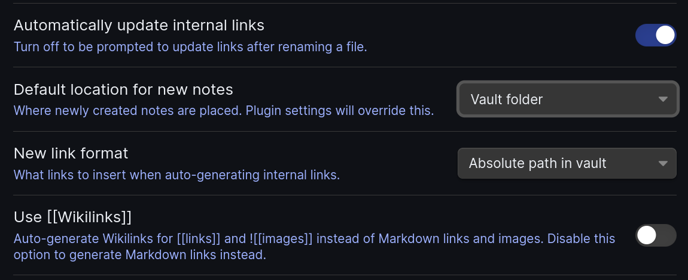
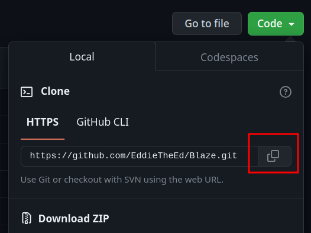
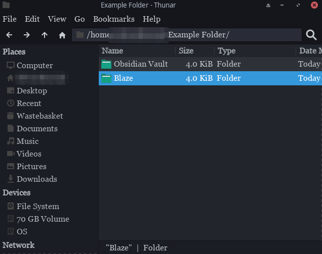

Before you start using Blaze, you probably need to set up a few other things first.
Configure your Obsidian vault settings as follows. The most important setting is absolute pathing and no wikilinks. 1 
Code and then clone it2, either through HTTPS or SSH. (It doesn't matter which.)
Say your files look something like this. (Your Obsidian vault doesn't literally have to be called Obsidian Vault)

All you need to do is simply move the Obsidian Vault folder into the Blaze folder. You can also delete the docs folder if you want, because that is for the blaze.toomwn.xyz website.
 Next, you need to change the
Next, you need to change the blazeconfig.toml file.
Go to the build section and change the string of the input option to the name of your Obsidian Vault. In this example, I would have to change it to 'Obsidian Vault'.

Now you're done! Open the new folder as a vault and your Obsidian stuff should be there.
Obsidian Vault.
Create button, then navigate to the named folder inside the Blaze folder.

blazeconfig.toml file. Go to the build section and change the string of the input option to the name of your Obsidian Vault. For example, I would have to change it to 'Obsidian Vault'.
Now you're done!